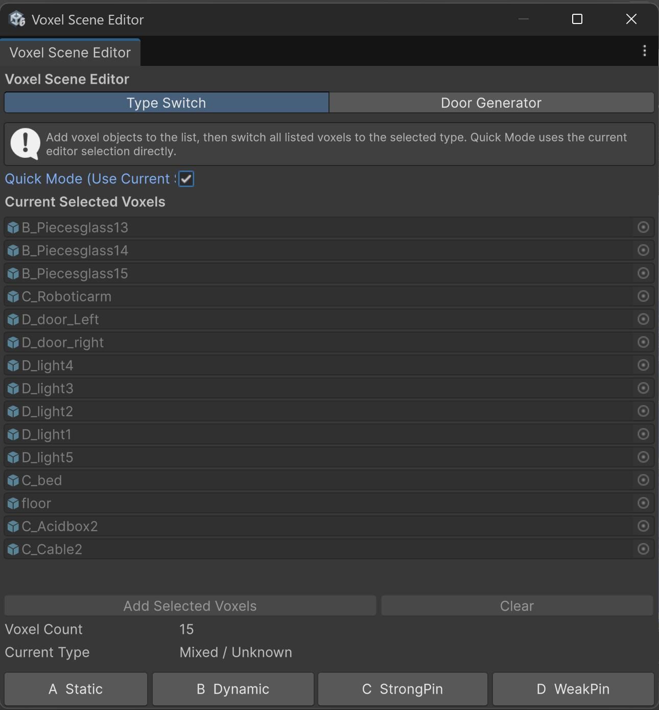
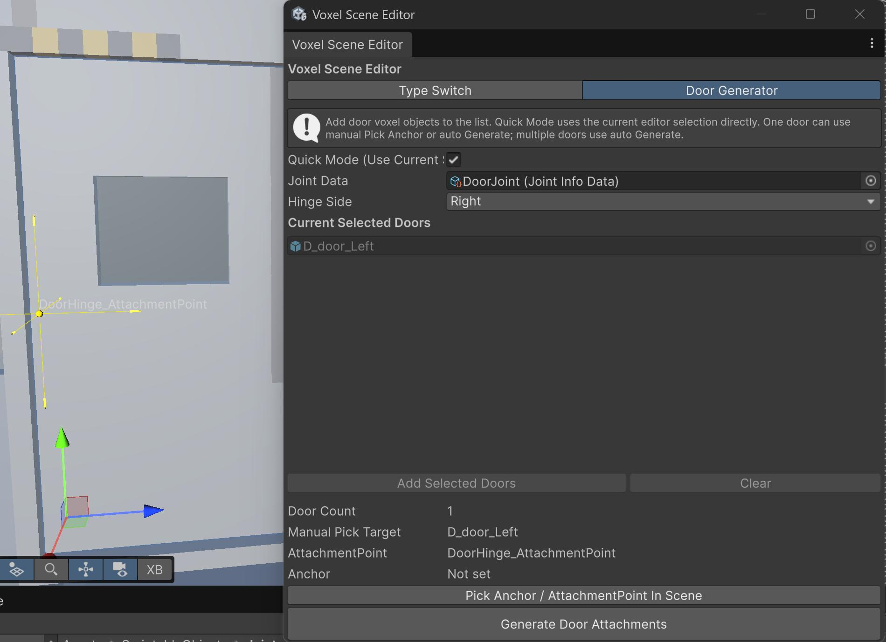

This guide explains how to prepare a voxel scene for Voxel Playground, import it into the Mod Toolkit, and use the Mod Toolkit version of Voxel Scene Editor to adjust scene object types and generate door hinges.
Tool path in the Mod Toolkit: Vox Mod Tools > Voxel Scene Editor
The Mod Toolkit version of Voxel Scene Editor contains two tabs:
Build large scenes as multiple objects in the MagicaVoxel World Editor. Give every object a unique name and use an A_, B_, C_, or D_ prefix to describe how it should behave in the game.
The prefix is not only a naming convention. When a .vox scene is converted, the importer uses it to configure the generated VoxelObjectProxy, physics state, entity type, layer, and connection helpers.
| Prefix | Type | Use for | Imported behavior |
|---|---|---|---|
A_ |
Static | Ground, roads, walls, and permanent structural geometry | Static SceneStatic object on the Building layer, tagged Floor, with a kinematic RigidbodyProxy. It is not destructible. |
B_ |
Dynamic | Crates, barriers, loose props, and debris | Destructible SceneDynamic object on the Item layer with dynamic physics. It can move freely after the scene loads. |
C_ |
Strong Connected | Destructible buildings or large objects that must remain supported by the environment | Destructible SceneStrongConnected object on the Item layer. An UnyieldingArea is added to keep connected voxels supported while the area overlaps the environment. |
D_ |
Weak Connected | Hanging signs, lamps, doors, and other objects attached through a breakable joint | Destructible SceneWeakConnected object on the Item layer. An AttachmentPoint and environment joint data are added so it can connect to nearby scene geometry. |
Use these questions when splitting a scene:
A_.B_.C_.D_.For example, a small building scene could contain:
A_Ground
A_Foundation
C_WallNorth
C_WallSouth
B_Table
B_Crate
D_HangingSign
C_Tower, not CTower..vox file a unique name. Duplicate names are renamed during conversion and make later updates harder to track.A_ floor object. Prefix every scene object to make its intended behavior clear.Vox Mod Tools > Assets Processor..vox file.Each generated voxel object should have a VoxelObjectProxy. Voxel Scene Editor only operates on objects that belong to a VoxelObjectProxy, so select the generated voxel object or one of its children when using the tool.
Open Vox Mod Tools > Voxel Scene Editor in the Mod Toolkit.
The Mod Toolkit window intentionally exposes only Type Switch and Door Generator. Tabs found in the full game project, such as Merge, Seats, Batch Select, and Settings, are not part of the Mod Toolkit workflow.
Use Type Switch when an imported object has the wrong prefix or when you want to change its behavior without returning to MagicaVoxel and converting the entire scene again.

There are two ways to provide voxel objects to the tool:
Quick Mode is useful for one-time edits. The target list is safer when you need to keep the same group selected while inspecting other objects.
The window reports the number of valid voxel objects and their shared current type. If the selected objects have different types, Current Type is shown as mixed or unknown, but pressing a type button still applies that type to every valid target.
Press the button for the target type. The operation updates both the object name prefix and its Mod Toolkit authoring setup, including VoxelObjectProxy.proxyType, the physics state, the entity component, the layer and tag, and any type-specific helper objects.
Changing away from C removes its UnyieldingArea. Changing away from D removes its AttachmentPoint objects. Check any manually customized connection helpers before changing an existing object to another type. The operation supports Unity Undo.
When all active targets are C objects, the tool displays Add 4 Corner Supports.
Use this for large buildings whose support should be distributed around their base instead of relying on a single central UnyieldingArea. The tool places support areas near the four bottom corners of the solid voxel bounds.
The pin works only when the support area overlaps valid Building-layer environment geometry. After generating the supports:
UnyieldingArea in the Scene view.A_ ground or foundation.When all active targets are D objects, the tool displays attachment-point controls.
Use Up, Down, Right, Left, Front, or Back to move the D object's AttachmentPoint to the center of the selected solid voxel face. The selected face also determines the attachment direction shown by the yellow Scene view gizmo.
Use Snap To Wall when the object is already close to the surface it should attach to. The tool searches nearby scene voxel objects, moves the attachment point to the closest suitable wall position, and orients the enabled attachment direction toward that wall.
For reliable snapping:
Use Door Generator to convert voxel objects into D-type weak-connected objects and configure their hinge attachment data.

Before generating a hinge:
JointInfoData asset whose joint type is HingeJoint.The generator accepts other joint data, but it logs a warning when the selected asset is not configured as a hinge. Use hinge joint data for predictable door behavior.
As in Type Switch, you can drag doors into the list or enable Quick Mode (Use Current Selection).
Choose one of the following Hinge Side options before automatic generation:
Left and Right are based on the door object's local axes. If the result appears reversed, check the door transform and local orientation, or use manual anchor picking.
Use this workflow for a single door when the automatic edge is not suitable:
Esc or right-click to cancel anchor picking.After a successful pick, the tool immediately configures the door and selects the generated attachment-point object.
For every successfully processed door, the generator:
DoorHinge_AttachmentPoint;EntityDestructibleItem and RigidbodyProxy;Generating again updates the existing door hinge attachment instead of intentionally creating a new hinge each time.
.vox file as Scene with Assets Processor.Select the generated voxel object or one of its children. The object must belong to a VoxelObjectProxy, and a project asset that is not open in a scene or Prefab Stage cannot be used as a current scene selection.
Check that its UnyieldingArea overlaps the intended A-type ground or foundation. Also confirm that the supporting object is configured as Building-layer static geometry.
Move its attachment point to the correct solid face or use Snap To Wall. Verify the yellow attachment arrow and confirm that the supporting voxel object is close enough.
Click directly on the door's visible mesh or collider. If picking remains difficult, use automatic generation first and then reposition the generated DoorHinge_AttachmentPoint.
The tool chooses the hinge candidate nearest to an A-type, Building-layer, or EntityBuilding voxel object. Remove unrelated nearby building geometry from the comparison area, choose Left or Right explicitly, or pick the anchor manually.